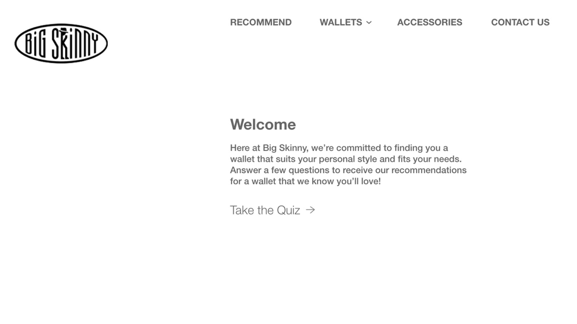

Consulting for Big Skinny
Overview
Spring 2019
This is the term project for CMU 67-250: The Information Systems Milieux. In this TP, we were the consulting team SQL Injection and tasked to rebrand the slim wallet company Big Skinny by analyzing its current UX and marketing strategy. Throughout the process, we redesigned Big Skinny’s website, outlined a new database structure and write out a detailed case analysis.
After two weeks of work, my team not only received an A for our deliverables, we also received the 2019 ISM Award for Best Case Analysis.
 |
| Big Skinny's Ad |
Background
Big Skinny is an e-commerce wallet company that sells thin wallets. Because of the unique material it uses, the company can produce surprisingly thin and lightweight wallets that are also water resistant and can be machine washed.
This seems like a great product, but in reality, this company is facing plummeting sales and its yelp page is filled with negative one-star reviews.
So, what went wrong?
Problems
Upon reviewing the company, my team and I concluded three major problems.
The first one is its bad website design. It’s hard to navigate and includes too much text and options. You can expereince it first-hand here: https://www.bigskinny.net

This is their front page when we took over. As you can see, different components were not aligned, tags and buttons are confusing (what does “CARD CASES + $ CLIPS” even means??). I hate to say this but the whole site left me with an impression of a high school project done at the last minute. Because of the bad user interface design, the conversion rate for somebody redirected to this website through online ads is guaranteed to be low.
The second problem is its lack of a target customer group. In its website, it tries to target men, women, travelers, police officers, teenagers, businessmen, and women, as well as random customer group with products like “Paper watch” and “Stainless Steel Mesh Wallet Comb” that doesn’t make any sense for a wallet company to sell

Big Skinny is the textbook classic company that tries to fit all markets. By providing more than 30+ Wallets for people to choose and tons of unnecessary accessories, the company try to please everyone and got no one in the end.
The third one is poor database management. In the yelp page, many people left a negative review because of an incident in 2010. In this incident, more than 4000 people ordered wallets through Big Skinny’s website. But because of a “glitch in an online promotion” as Big Skinny CEO Kiril Alexandrov put it, most of the wallets were given for free. Technical difficulties with promotion coupons appeared multiple times ever since, as can be seen in 2013 and 2017. This can be attributed to bad database structure and management.
Our Proposal
To improve Big Skinny’s sales, we first need to rebrand the company. Thus, we identified a target customer group: young travelers. This is because big skinny’s waterproof thin wallet fit the need of travelers and hikers. Then, we identified three major problems with its current website: lengthy words, disorganized layout, too many choices to narrow down to one product. And by deploying online marketing campaigns directly targeting young travelers and redesigning our website to provide a youth-centered user experience that can attract and assist young travelers in buying and selecting wallets. Finally, we come up with a new database relationship system that can hopefully avoid further coupon problems.
To target young gen Z travelers, we initiated the “Built for the Courageous” online marketing campaign. As a part of this campaign, Big Skinny will need at least one person dedicated solely to consistently creating new content and synthesizing customer testimonials for future advertisements. Part of this campaign will include new media for all platforms, such as a Facebook video ad to target and draw in the young traveler demographic.
After we allured customer with ads to our website, we need to provide an easy-to-use user experience. Thus, we first re-designed the website by organizing its information architecture in a clean and easy to follow manner. We designed a clear navigation bar and cut down words in the index page from 200 words to around 50 words while keeping essential information. By accompanied them with images, we can make them more readable for the customer.
The new website we designed

Moreover, to help customers narrow their choices from 40+ wallet designs to one wallet, we designed an interactive wallet selection guide.
Lastly, we come up with a new database relationship system that can track coupon records, customer purchasing histories, as well as inventory.
A User Story
Say Jack is a 20-year-old college graduate, While browsing Facebook one day, he saw a short video about this amazingly slim wallet. This video is actually a Facebook ad we bought in the online marketing campaign. By the end of the video, he saw a line says “Build for the courageous”. As a traveler, he was inspired to click the link to go to our website.
Upon visiting our website, the first thing he saw is this inspiring image and as he scrolled down he saw all the advantages of Big Skinny wallets. Just as he was about to buy one, he saw the wallet selection guide and clicked it. There, he can select his preferences and the site will provide recommendations.

“Wow, these recommendations seem great. let me check out this wallet”
In the product info page, we simplified all the product information. So, customers can learn more about the wallet quickly and place an order quickly.

“This looks great. I will take it!”
This is the end of one transaction, but not the end of our relationship with this customer. Using our database system, a week after Jack bought the first wallet, we will recommend a second category of wallet, such as a leather wallet different from the one customer originally purchased, and advertise it in an email saying, “One for outdoors and one for indoors.”
In conclusion, by integrating market research, database design, and website design, this solution will emphasize Big Skinny’s strengths and improved customer experience.
Credits
Throughout the two weeks of our term project, my role is sort of like the “scrum master” in the team. I set up the overall goal and communicate with each individual about their design, provide them with feedback, make sure the production timeline is working and keep track of the scope of our term project.
Since the four of us cannot meet frequently, I coordinate the team to make sure we are all on the same page and the Executive summary, web prototype and ERD are tightly integrated. On the other hand, my friend Christine, Megan and Jonathan are responsible for the actual work. Thank you for all the good work!